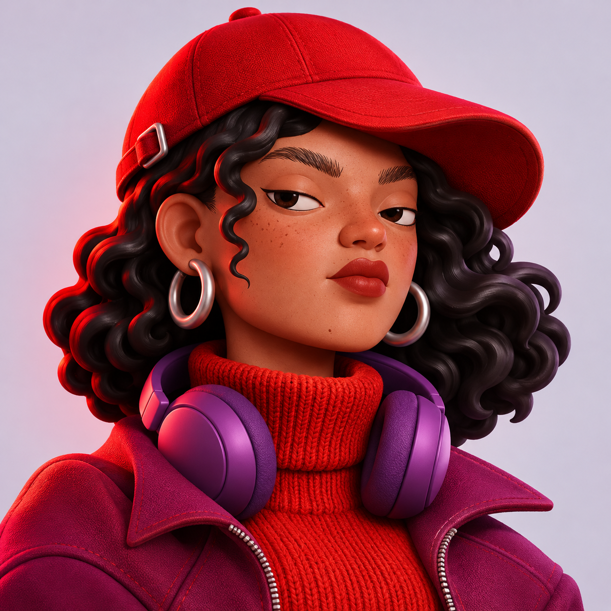
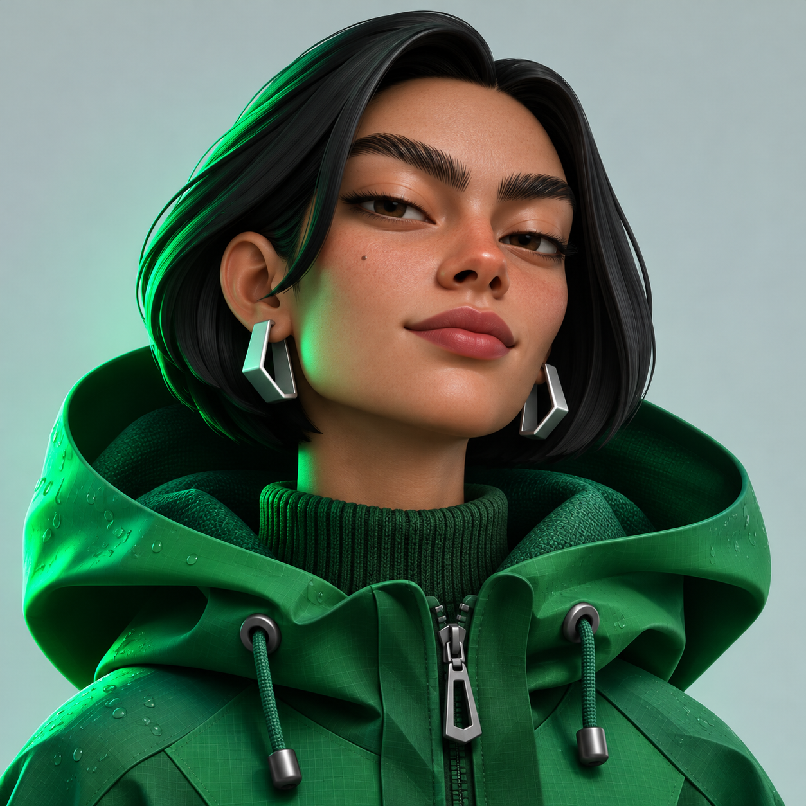
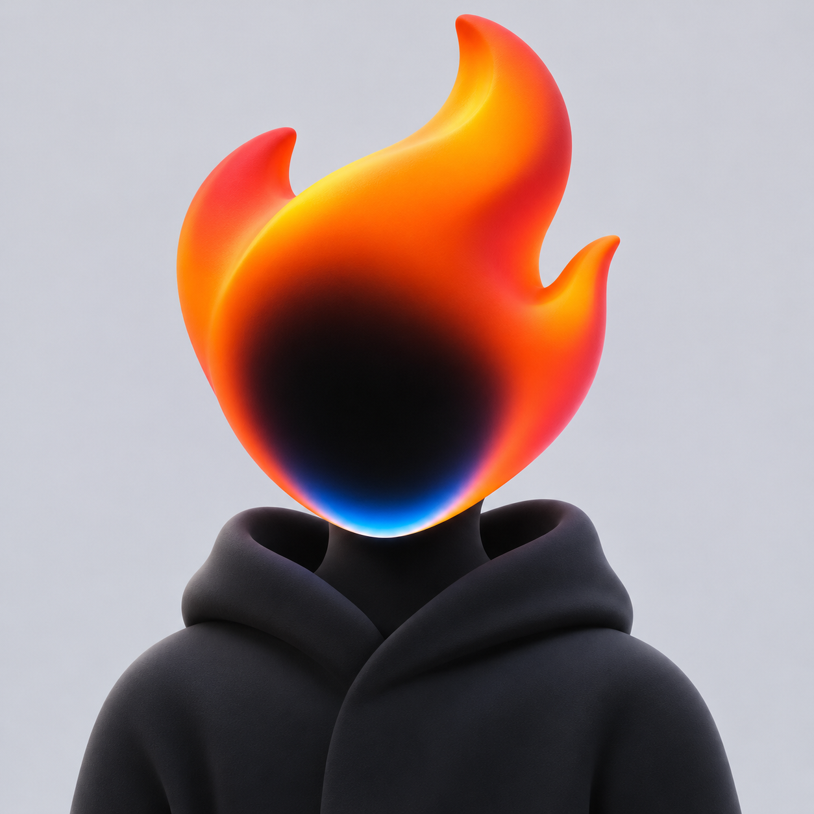
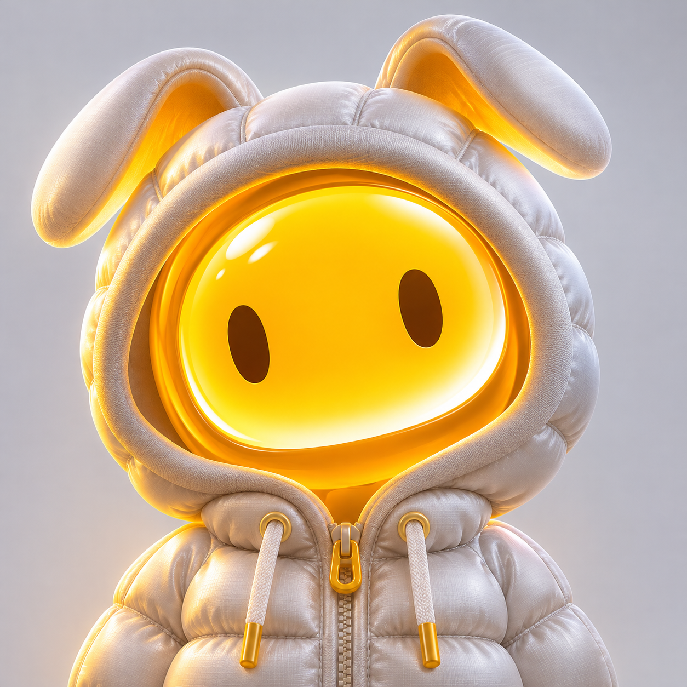
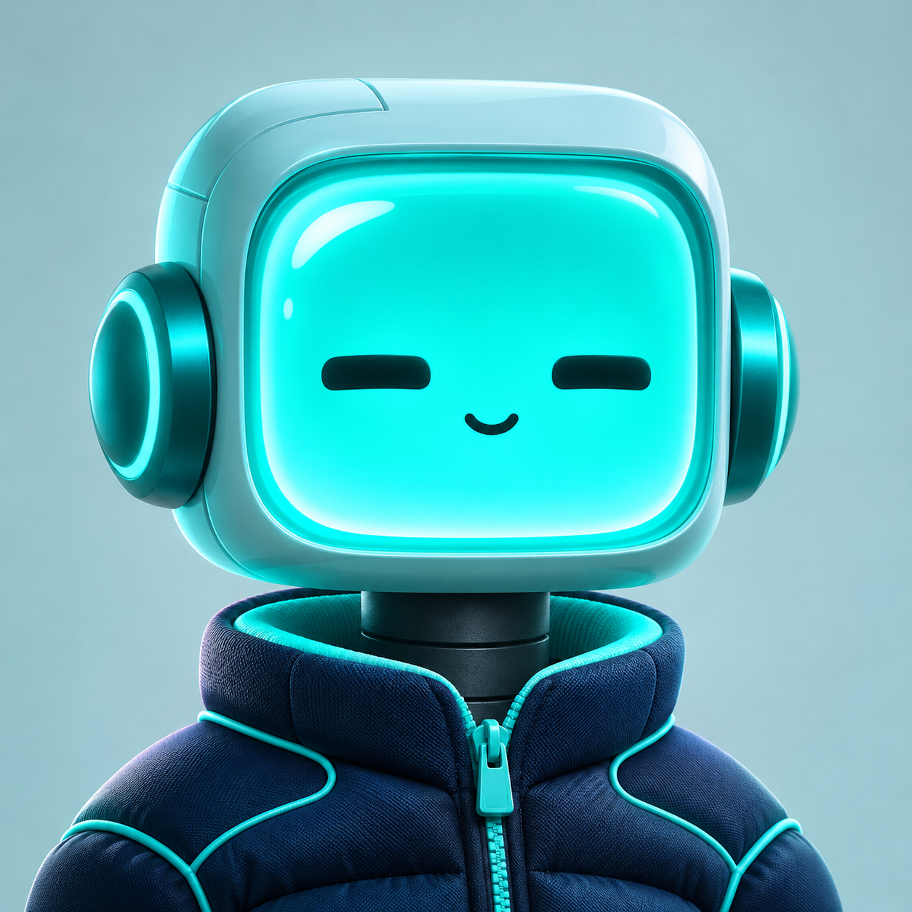
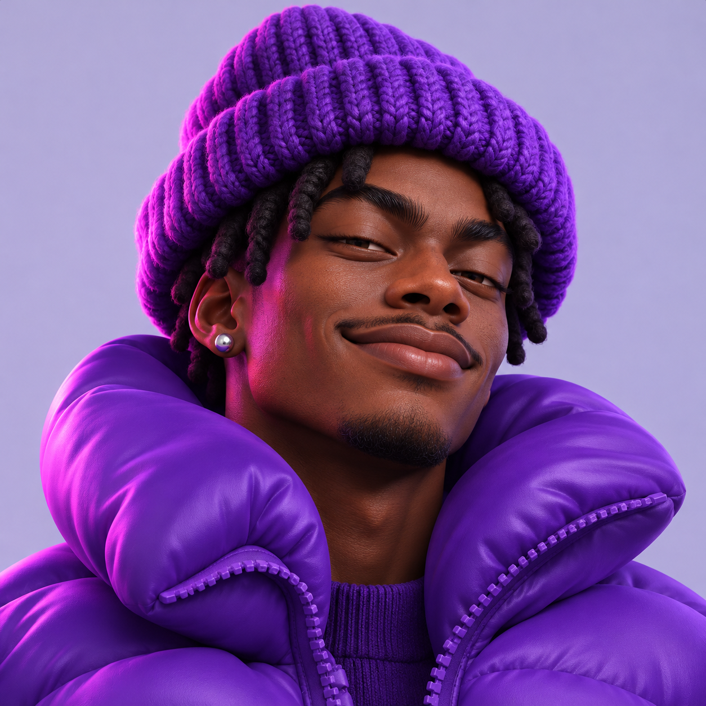
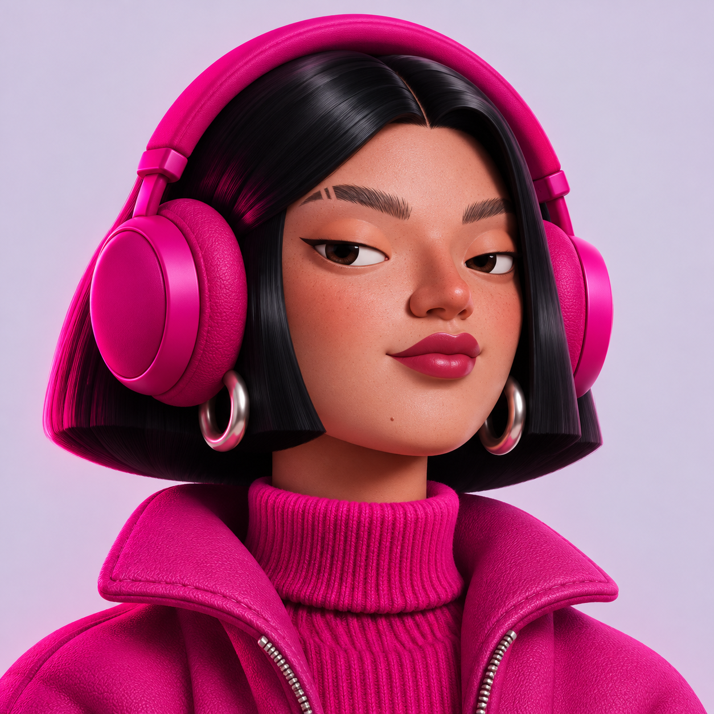
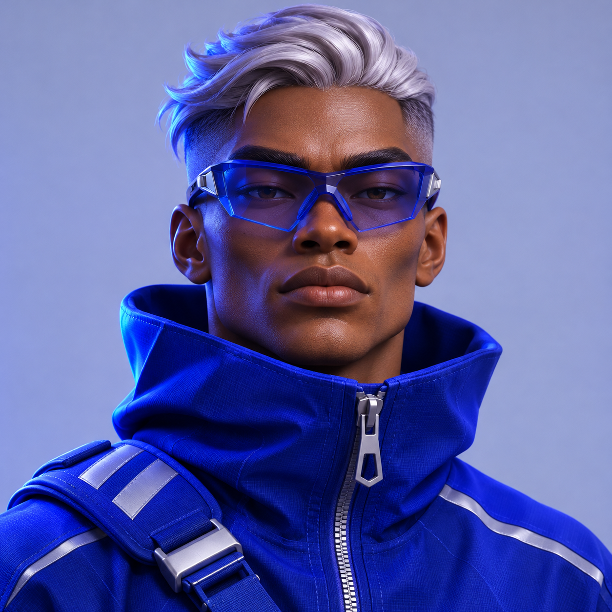
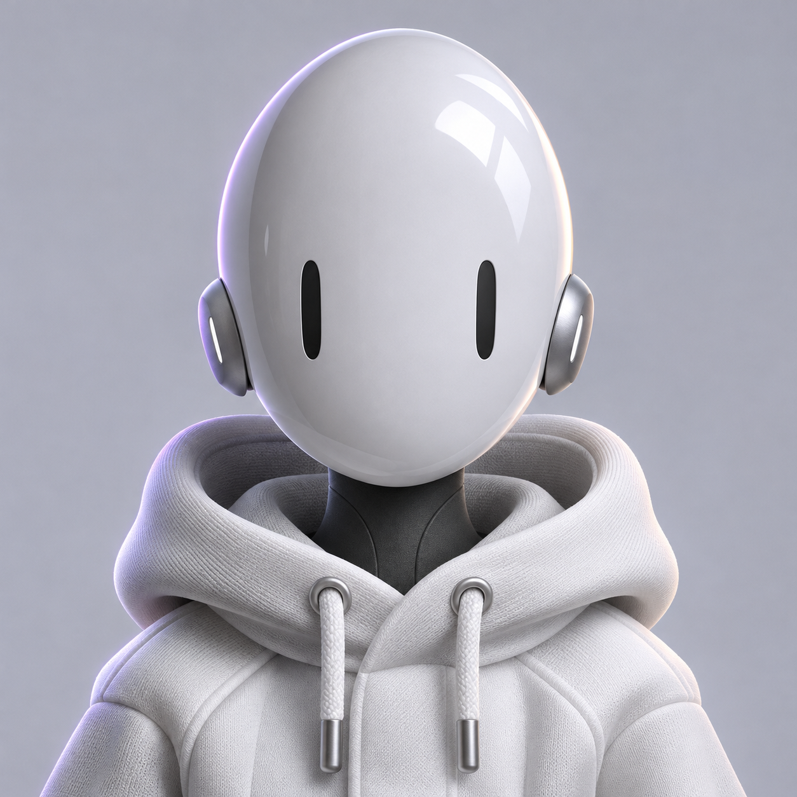
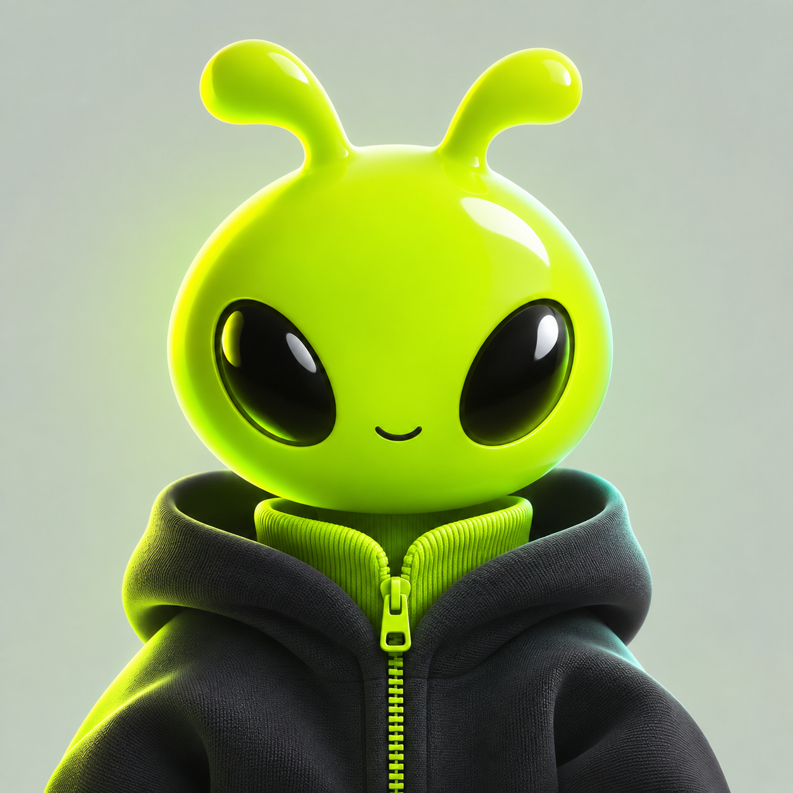

SHENRU / CHARACTER COLLECTION
十种色彩，十种个性。
全新绘制的 10 个立体角色，拥有各自的色彩、轮廓与材质。首次随机分配，刷新或改名后保持不变。

朱红街头01 / RED
翠绿旅人02 / EMERALD
橙色星火03 / ORANGE
金色小光04 / GOLD
青色冰核05 / CYAN
紫色夜游06 / VIOLET
玫红声波07 / MAGENTA
钴蓝航手08 / COBALT
银白灵偶09 / SILVER
荧绿萌芽10 / LIME